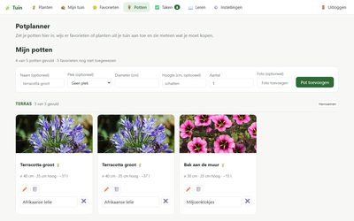
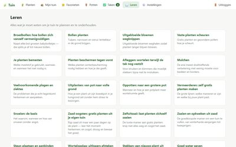
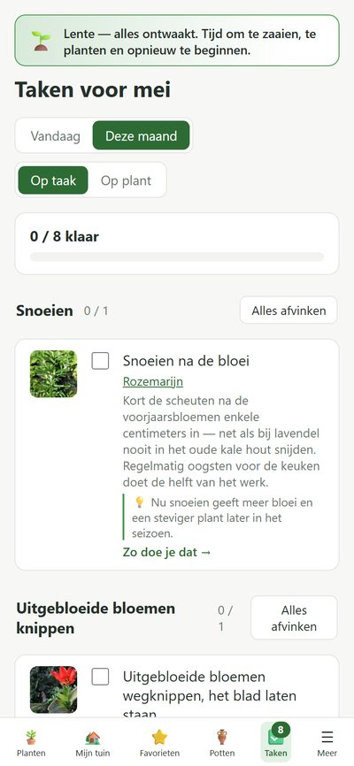
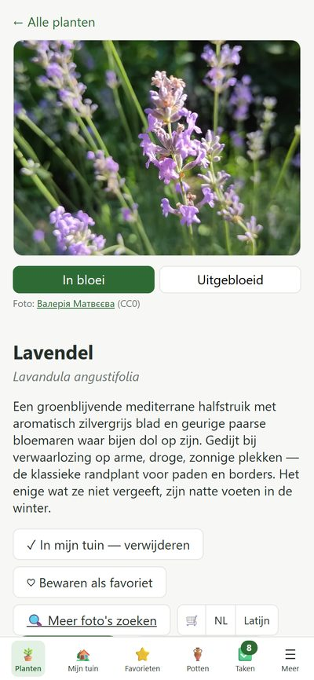

$ cd ~/projects/garden-app
> Garden App_
Jul 2026 - Aug 2026
Garden App is a progressive web app I made to plan and maintain a garden. It has four parts: a plant database, a collection of the plants in my own garden, an automatically generated task list and a set of how-to guides. It is meant for total beginners as well as people who already know their way around a garden, and it installs on a phone like a native app. It's a personal project and not a public app, so this page only shows what I built.
The plant database is curated content, not scraped data. It holds 133 plants, written for a temperate Belgian climate, and every fact is backed by a source (the RHS and Wikipedia). Each plant has a flowering and a non-flowering photo under an open license, with the author credited. Cultivars are recorded as part of their species, so a variety that needs different care gets its own care rules instead of a near-duplicate entry. I wrote the plant data and the interface in Dutch.
The task list is the core idea: it is computed, never stored. For every plant in my garden, the app combines its care rules (prune after flowering, deadhead, protect from frost) with the current month, and that gives the tasks I should do now. Only the tasks I tick off are saved. Each task links to a how-to guide, and a progress bar keeps it a little playful. The app can also use a weather forecast to show frost-protection tasks only when frost is actually coming. Around that core there are favorites to shortlist plants and a pot planner that works out which plant fits in which pot.
Garden App consists of 2 components:
- Angular 20 frontend, built as an installable PWA with a service worker
- Django REST Framework backend with JWT authentication, which stores the garden, settings and completed tasks
The screenshots below show demo data.




